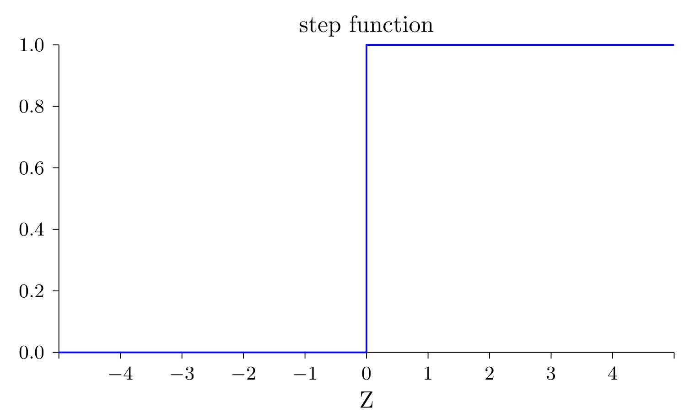
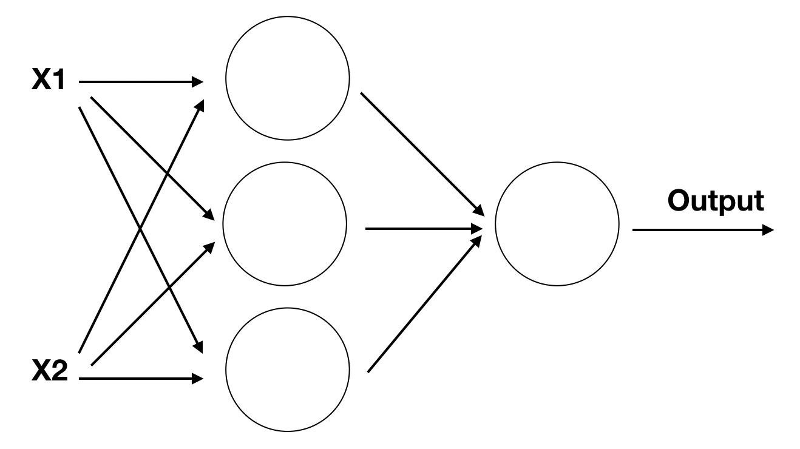

S型神经元
在我们之前的讲解中，你已经知道了感知器可以实现二值分类，也就是通过输入判断输出0还是1。但这种感知器的功能还是太有限了，因此我们希望能够丰富一下它的功能。
激活函数
当我们利用感知器实现二值分类的时候，我们实际上是通过一个

现在我们给对输入进行处理的这类函数取个名字，叫
那现在第一节中感知器的表示就不再需要判断分支了，可以直接写成
这里加权输入这么长也不好看，我们直接用
简写一下，上式就可以变成
现在看是不是清爽多了。
sigmoid函数
正如世界并不是非黑即白，而是有无穷个中间色一样，如果我们感知器的输出只能输出两个值，那他的表示能力肯定是有限的，因此我们希望能将

这样我们就对感知器引入了
Important
需要注意的是，S型神经元的激活函数并非只有simgoid函数一种，他还可以包含类似tanh等激活函数，这些不同的函数具体作用和应用场景又有不同，但此时暂时不过多介绍。
自我学习
经过替换激活函数，我们有了一个可以表示非线性拟合的神经元了。接下来我们回想一下上节让神经元实现逻辑门时候的代码。每个神经元的权重和偏置都是我们人为设定的。但是，权重和偏置可是神经元独一无二的特性啊，如果都手工设定，怎么能展示他们的个性呢？ 有没有一种方法，可以让神经元根据任务的不同，自己去学习自己独属的权重和偏置呢？
答案当然是可以的，但正如我们之前所说，一个神经元的力量太微小了，他不能完成某些任务。所以当我们希望神经元自己根据不同任务学习权重和偏置时，我们一般需要先搭建一个神经网络，他可能长下面这样子

他和我们之前的多层感知机是不是相同，但这里每个小组件都替换成了神经元，因此整体也被我们称为
想象一下我们正在玩1-100的猜数字游戏，A先想出一个数字，B去猜，如果大了就继续猜更小的数字，如果小了就继续猜更大的数字，直到最后猜出那个正确的数字。
我们梳理一下这个过程，首先它是一个反馈过程。需要知道猜测的结果是大还是小，还要知道根据这个结果怎么去修改猜测的值。对应到神经元的学习中，就是我们需要一个
上面突然就提到了两个新概念，而且都是复杂而又困难的。我们现在先简单引入一下损失函数，至于
损失函数
损失函数可以网络学习中一个非常重要的概念，用于衡量模型的预测值与真实值之间的差异，即模型的误差大小。损失函数的作用是指导模型的训练过程，帮助模型不断地优化，最终得到更准确的预测结果。
他就像一个神经网络的领路人，但这里我们先简单介绍一个最基本的
当预测值和目标值差距远的时候，对应的损失值就大，相反如果距离近，损失值就小。
当然深度学习发展这么长时间产生了许多不同的损失函数，他们有各自不同的优势及应用场景，但他们目的都是衡量网络预测的结果和目标结果之间的差距。之后我们会尽量详细的介绍不同损失函数的作用以及区别。
目前我们只需要先了解这个L1 loss就好，我们将用他来设计一个可以自己学习的神经网络，实现异或操作。
设计网络实现异或操作
这里假设你已经对python有了基础的知识，首先我们需要导入基本的模块
import numpy as np
import matplotlib.pyplot as plt
其中numpy是我们用于计算的库，plt则是后续用来观察的库
然后我们可以定义输入的数据和期望得到的结果,输入是一个二维数组，用来枚举所有可能的输入情况。输出为对输入进行异或操作期望的结果。
x = np.array([[0,0,1,1],[0,1,0,1]])
y = np.array([0,1,1,0])
接下来我们需要定义一个神经网络，他的输入是2，因为每次x的取值是2。隐藏层定义为3，这个是任意取得，当然你也可以选择2或者4。最后设计输出层为1，因为输出只可能有一个值。 这样我们的代码就可以添加上这样的超参
inputN, hiddenN, outN = 2, 3, 1
这时候网络如果可视化的话，它长下图这样子

我们定义一下他前向传输的过程，首先需要输入到隐藏层的权重和偏置，以及隐藏层到输出层的权重和偏置，他们用代码表示为
w1 = np.random.rand(hiddenN, inputN)
b1 = np.random.rand(hiddenN,1)
w2 = np.random.rand(outN, hiddenN)
b2 = np.random.rand(outN,1)
回忆一下s型神经元的表达式，我们似乎缺一个激活函数,他用代码表示为
def sigmoid(x):
return 1.0 / (1 + np.exp(-x))
现在就可以写出前向传播的完整过程了
def forward(x,w1,b1,w2,b2):
# 必须将b1变成列向量
z1 = np.dot(w1,x) + b1
a1 = sigmoid(z1)
z2 = np.dot(w2,a1) + b2
a2 = sigmoid(z2)
return z1,a1,z2,a2
通过前向传播我们就能得到网络的预测结果了，但是更重要的是我们需要
def backward(x,y,z1,a1,z2,a2,w1,w2):
bs = x.shape[1]
dz2 = a2 - y
dw2 = np.dot(dz2, a1.T) / bs
db2 = np.sum(dz2, axis=1,keepdims=True) / bs
dz1 = np.dot(w2.T,dz2)*a1*(1-a1)
dw1 = np.dot(dz1, x.T) / bs
db1 = np.sum(dz1, axis=1,keepdims=True) / bs
# 对dw1和dw2的数据的尺寸进行设置
dw1 = dw1.reshape(w1.shape)
db1 = db1.reshape(b1.shape)
dw2 = dw2.reshape(w2.shape)
db2 = db2.reshape(b2.shape)
return dw1,db1,dw2,db2
损失函数定义为上面提到的l1 loss
loss = np.sum(y - out)
接下来就是通过一定的迭代次数训练该网络，他的整个过程是
import matplotlib.pyplot as plt
# 对超参数进行设置
lr = 0.01
epochs = 10000
losses = []
bs = x.shape[1]
# 进行训练
for epoch in range(epochs):
# 进行前项传播
z1,a1,z2,a2 = forward(x,w1,b1,w2,b2)
loss = -np.sum(y * np.log(a2) + (1-y)*np.log(1-a2)) / bs
losses.append(loss)
# 进行反向传播
dw1,db1,dw2,db2 = backward(x,y,z1,a1,z2,a2,w1,w2)
w1 -= lr * dw1
b1 -= lr * db1
w2 -= lr * dw2
b2 -= lr * db2
# 绘制损失函数曲线
plt.plot(losses)
plt.xlabel("epoch")
plt.ylabel("loss value")
如果代码正确的话，你将得到一张这样的损失函数图像
可以看到输出和gt已经很像了，到这里我们就实现了设计一个神经网络，并通过迭代学习是他达到一个功能。以后你遇到的所有内容都是对这个项目的拓展和补充修改。此时你唯独对反向传播还完全不理解，那继续进行下一节的学习吧。